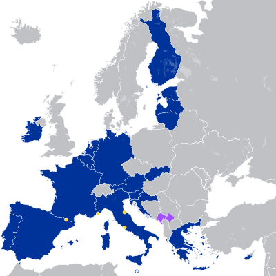

Eurozone

Eurozone members (20) | |
| Policy of | European Union |
|---|---|
| Type | Monetary union |
| Currency | Euro |
| Established | 1 January 1999 |
| Members | |
| Governance | |
| Monetary authority | Eurosystem |
| Political oversight | Eurogroup |
| Statistics | |
| Area | 2,801,552 km2 (1,081,685 sq mi)[1] |
| Population | 350,077,581 (January 1, 2024)[2] |
| Density | 125/km2 (323.7/sq mi) |
| GDP (nominal) | €14.372 trillion €40,990 (per capita) (2023)[3] |
| Interest rate | 4.00%[4] |
| Inflation | 2.4% (March 2024)[5] |
| Unemployment | 6.5% (February 2024)[6] |
| Trade balance | €310 billion trade surplus[7] |
{kind=link}
The euro area,[8] commonly called the eurozone (EZ), is a currency union of 20 member states of the European Union (EU) that have adopted the euro (€) as their primary currency and sole legal tender, and have thus fully implemented EMU policies.
The 20 eurozone members are:
- Austria, Belgium, Croatia, Cyprus, Estonia, Finland, France, Germany, Greece, Ireland, Italy, Latvia, Lithuania, Luxembourg, Malta, the Netherlands, Portugal, Slovakia, Slovenia, and Spain.
The seven non-eurozone members of the EU are Bulgaria, the Czech Republic, Denmark, Hungary, Poland, Romania, and Sweden. They continue to use their own national currencies, although all but Denmark are obliged to join once they meet the euro convergence criteria.[9]
Among non-EU member states, Andorra, Monaco, San Marino, and Vatican City have formal agreements with the EU to use the euro as their official currency and issue their own coins.[10][11][12] In addition, Kosovo and Montenegro have adopted the euro unilaterally, relying on euros already in circulation rather than minting currencies of their own.[13] These six countries, however, have no representation in any eurozone institution.[14]
The Eurosystem is the monetary authority of the eurozone, the Eurogroup is an informal body of finance ministers that makes fiscal policy for the currency union, and the European System of Central Banks is responsible for fiscal and monetary cooperation between eurozone and non-eurozone EU members. The European Central Bank (ECB) makes monetary policy for the eurozone, sets its base interest rate, and issues euro banknotes and coins.
Since the financial crisis of 2007–2008, the eurozone has established and used provisions for granting emergency loans to member states in return for enacting economic reforms.[citation needed] The eurozone has also enacted some limited fiscal integration; for example, in peer review of each other's national budgets. The issue is political and in a state of flux in terms of what further provisions will be agreed for eurozone change. No eurozone member state has left, and there are no provisions to do so or to be expelled.[15]
Territory
[edit]Eurozone
[edit]In 1998, eleven member states of the European Union had met the euro convergence criteria, and the eurozone came into existence with the official launch of the euro (alongside national currencies) on 1 January 1999 in those countries: Austria, Belgium, Finland, France, Germany, Ireland, Italy, Luxembourg, the Netherlands, Portugal, and Spain. Greece qualified in 2000 and was admitted on 1 January 2001.
These twelve founding members introduced physical euro banknotes and euro coins on 1 January 2002. After a short transition period, they took out of circulation and rendered invalid their pre-euro national coins and notes.
Between 2007 and 2023, eight new states have acceded: Croatia, Cyprus, Estonia, Latvia, Lithuania, Malta, Slovakia, and Slovenia.
| state | ISO code | adopted on 1 January of | population in 2021[2] | nominal GNI in 2021 in millions of USD[16] | nominal GNI as fraction of eurozone total | nominal GNI per capita in 2021 in USD | pre-euro currency | conversion rate of euro to pre-euro currency[17] | pre-euro currency was also used in | territories where euro is not used |
|---|---|---|---|---|---|---|---|---|---|---|
| AT | 1999[18] | 8,932,664 | 472,474 | 3.27% | 52,893 | schilling | 13.7603 | |||
| BE | 1999[18] | 11,554,767 | 585,375 | 4.05% | 50,661 | franc | 40.3399 | Luxembourg | ||
| HR | 2023[19] | 4,036,355 | 68,724 | 0.48% | 17,026 | kuna | 7.53450 | |||
| CY | 2008[20] | 896,007 | 25,634 | 0.18% | 28,609 | pound | 0.585274 | Northern Cyprus[a] | ||
| EE | 2011[21] | 1,330,068 | 35,219 | 0.24% | 26,479 | kroon | 15.6466 | |||
| FI | 1999[18] | 5,533,793 | 296,473 | 2.05% | 53,575 | markka | 5.94573 | |||
| FR | 1999[18] | 67,656,682 | 2,991,553 | 20.69% | 44,217 | franc | 6.55957 | Andorra Monaco |
New Caledonia[b] French Polynesia[b] Wallis and Futuna[b] | |
| DE | 1999[18] | 83,155,031 | 4,298,325 | 29.72% | 51,690 | Mark | 1.95583 | Kosovo Montenegro |
||
| GR[c] | 2001[22] | 10,678,632 | 212,807 | 1.47% | 19,928 | drachma | 340.750 | |||
| IE | 1999[18] | 5,006,324 | 383,084 | 2.65% | 76,520 | pound | 0.787564 | |||
| IT | 1999[18] | 59,236,213 | 2,127,119 | 14.71% | 35,909 | lira | 1936.27 | San Marino Vatican City |
||
| LV | 2014[23] | 1,893,223 | 37,295 | 0.26% | 19,699 | lats | 0.702804 | |||
| LT | 2015[24] | 2,795,680 | 60,884 | 0.42% | 21,778 | litas | 3.45280 | |||
| LU | 1999[18] | 634,730 | 56,449 | 0.39% | 88,934 | franc | 40.3399 | Belgium | ||
| MT | 2008[25] | 516,100 | 15,948 | 0.11% | 30,901 | lira | 0.429300 | |||
| NL | 1999[18] | 17,475,415 | 967,837 | 6.69% | 55,383 | guilder | 2.20371 | Aruba[d] Curaçao[e] Sint Maarten[e] Caribbean Netherlands[f] | ||
| PT | 1999[18] | 10,298,252 | 246,714 | 1.71% | 23,957 | escudo | 200.482 | |||
| SK | 2009[26] | 5,459,781 | 112,424 | 0.78% | 20,591 | koruna | 30.1260 | |||
| SI | 2007[27] | 2,108,977 | 59,608 | 0.41% | 28,264 | tolar | 239.640 | |||
| ES | 1999[18] | 47,398,695 | 1,407,936 | 9.74% | 29,704 | peseta | 166.386 | Andorra | ||
| eurozone | EZ[g] | — | 346,597,389[h] | 14,461,883 | 100.00% | 41,725 | — | — | — | see above |
Dependent territories of EU member states not part of the EU
[edit]Three French dependent territories that are not part of the EU have adopted the euro, with France ensuring eurozone laws are implemented:
- Territorial collectivity of Saint Barthélemy
- Overseas Collectivity of Saint-Pierre and Miquelon
- French Southern and Antarctic Lands
Non-member usage
[edit]{kind=link}
- European Union member states (special territories not shown)
- 20 in the eurozone1 in ERM II, with an opt-out (Denmark)5 not in ERM II, but obliged to join the eurozone on meeting the convergence criteria (Czech Republic, Hungary, Poland, Romania, and Sweden)
- Non–EU member states
With formal agreement
[edit]The euro is also used in countries outside the EU. Four states (Andorra, Monaco, San Marino, and Vatican City) have signed formal agreements with the EU to use the euro and issue their own coins.[28][29] Nevertheless, they are not considered part of the eurozone by the ECB and do not have a seat in the ECB or Euro Group.
Akrotiri and Dhekelia (located on the island of Cyprus) belong to the United Kingdom, but there are agreements between the UK and Cyprus[citation needed] and between UK and EU[citation needed] about their partial integration with Cyprus and partial adoption of Cypriot law, including the usage of euro in Akrotiri and Dhekelia.[citation needed]
Several currencies are pegged to the euro, some of them with a fluctuation band and others with an exact rate. The Bosnia and Herzegovina convertible mark was once pegged to the Deutsche mark at par, and continues to be pegged to the euro today at the Deutsche mark's old rate (1.95583 per euro). The Bulgarian lev was initially pegged to the Deutsche Mark at a rate of BGL 1000 to DEM 1 in 1997, and has been pegged at a rate of BGN 1.95583 to EUR 1 since the introduction of the euro and the redenomination of the lev in 1999. The West African and Central African CFA francs are pegged exactly at 655.957 CFA to 1 EUR. In 1998, in anticipation of Economic and Monetary Union of the European Union, the Council of the European Union addressed the monetary agreements France had with the CFA Zone and Comoros, and ruled that the ECB had no obligation towards the convertibility of the CFA and Comorian francs. The responsibility of the free convertibility remained in the French Treasury.
Without formal agreement
[edit]Kosovo and Montenegro unilaterally adopted the euro as their sole currency without an agreement and, therefore, have no issuing rights.[29] These states are not considered part of the eurozone by the ECB. However, sometimes the term eurozone is applied to all territories that have adopted the euro as their sole currency.[30][31][32] Further unilateral adoption of the euro (euroisation), by both non-euro EU and non-EU members, is opposed by the ECB and EU.[33]
Historical eurozone enlargements and exchange-rate regimes for EU members
[edit]The chart below provides a full summary of all applying exchange-rate regimes for EU members, since the birth, on 13 March 1979, of the European Monetary System with its Exchange Rate Mechanism and the related new common currency ECU. On 1 January 1999, the euro replaced the ECU 1:1 at the exchange rate markets. During 1979–1999, the Deutsche Mark functioned as a de facto anchor for the ECU, meaning there was only a minor difference between pegging a currency against the ECU and pegging it against the Deutsche Mark.
Sources: EC convergence reports 1996-2014, Italian lira, Spanish peseta, Portuguese escudo, Finnish markka, Greek drachma, Sterling
The eurozone was born with its first 11 member states on 1 January 1999. The first enlargement of the eurozone, to Greece, took place on 1 January 2001, one year before the euro physically entered into circulation. The next enlargements were to states which joined the EU in 2004, and then joined the eurozone on 1 January of the year noted: Slovenia in 2007, Cyprus in 2008, Malta in 2008, Slovakia in 2009, Estonia in 2011, Latvia in 2014, and Lithuania in 2015. Croatia, which acceded to the EU in 2013, adopted the euro in 2023.
All new EU members joining the bloc after the signing of the Maastricht Treaty in 1992 are obliged to adopt the euro under the terms of their accession treaties. However, the last of the five economic convergence criteria which need first to be complied with in order to qualify for euro adoption, is the exchange rate stability criterion, which requires having been an ERM-member for a minimum of two years without the presence of "severe tensions" for the currency exchange rate.
In September 2011, a diplomatic source close to the euro adoption preparation talks with the seven remaining new member states who had yet to adopt the euro at that time (Bulgaria, the Czech Republic, Hungary, Latvia, Lithuania, Poland, and Romania), claimed that the monetary union (eurozone) they had thought they were going to join upon their signing of the accession treaty may very well end up being a very different union, entailing a much closer fiscal, economic, and political convergence than originally anticipated. This changed legal status of the eurozone could potentially cause them to conclude that the conditions for their promise to join were no longer valid, which "could force them to stage new referendums" on euro adoption.[34]
Future enlargement
[edit]Seven countries (Bulgaria, the Czech Republic, Denmark, Hungary, Poland, Romania, and Sweden) are EU members but do not use the euro.
Before joining the eurozone, a state must spend at least two years in the European Exchange Rate Mechanism (ERM II). As of January 2023, the central bank of Denmark and the Bulgarian central bank participate in ERM II.
Denmark obtained a special opt-out in the original Maastricht Treaty, and thus is legally exempt from joining the eurozone unless its government decides otherwise, either by parliamentary vote or referendum. The United Kingdom likewise had an opt-out prior to withdrawing from the EU in 2020.
The remaining six countries are obliged to adopt the euro in future, although the EU has so far not tried to enforce any time plan. They should join as soon as they fulfill the convergence criteria, which include being part of ERM II for two years. Sweden, which joined the EU in 1995 after the Maastricht Treaty was signed, is required to join the eurozone. However, the Swedish people turned down euro adoption in a 2003 referendum and since then the country has intentionally avoided fulfilling the adoption requirements by not joining ERM II, which is voluntary.[35][36] Bulgaria joined ERM II on 10 July 2020.[37]
Interest in joining the eurozone increased in Denmark, and initially in Poland, as a result of the financial crisis of 2007–2008. In Iceland, there was an increase in interest in joining the European Union, a pre-condition for adopting the euro.[38] However, by 2010 the debt crisis in the eurozone caused interest from Poland, as well as the Czech Republic, Denmark and Sweden to cool.[39]
Expulsion and withdrawal
[edit]In the opinion of journalist Leigh Phillips and Locke Lord's Charles Proctor,[40][41] there is no provision in any European Union treaty for an exit from the eurozone. In fact, they argued, the Treaties make it clear that the process of monetary union was intended to be "irreversible" and "irrevocable".[41] However, in 2009, a European Central Bank legal study argued that, while voluntary withdrawal is legally not possible, expulsion remains "conceivable".[42] Although an explicit provision for an exit option does not exist, many experts and politicians in Europe have suggested an option to leave the eurozone should be included in the relevant treaties.[43]
On the issue of leaving the eurozone, the European Commission has stated that "[t]he irrevocability of membership in the euro area is an integral part of the Treaty framework and the Commission, as a guardian of the EU Treaties, intends to fully respect [that irrevocability]."[44] It added that it "does not intend to propose [any] amendment" to the relevant Treaties, the current status being "the best way going forward to increase the resilience of euro area Member States to potential economic and financial crises.[44] The European Central Bank, responding to a question by a Member of the European Parliament, has stated that an exit is not allowed under the Treaties.[45]
Likewise there is no provision for a state to be expelled from the euro.[46] Some, however, including the Dutch government, favour the creation of an expulsion provision for the case whereby a heavily indebted state in the eurozone refuses to comply with an EU economic reform policy.[47]
In a Texas law journal, University of Texas at Austin law professor Jens Dammann has argued that even now EU law contains an implicit right for member states to leave the eurozone if they no longer meet the criteria that they had to meet in order to join it.[48] Furthermore, he has suggested that, under narrow circumstances, the European Union can expel member states from the eurozone.[49]
Administration and representation
[edit]{kind=link}
The monetary policy of all countries in the eurozone is managed by the European Central Bank (ECB) and the Eurosystem which comprises the ECB and the central banks of the EU states who have joined the eurozone. Countries outside the eurozone are not represented in these institutions. Whereas all EU member states are part of the European System of Central Banks (ESCB), non EU member states have no say in all three institutions, even those with monetary agreements such as Monaco. The ECB is entitled to authorise the design and printing of euro banknotes and the volume of euro coins minted, and its president is currently Christine Lagarde.
The eurozone is represented politically by its finance ministers, known collectively as the Eurogroup, and is presided over by a president, currently Paschal Donohoe. The finance ministers of the EU member states that use the euro meet a day before a meeting of the Economic and Financial Affairs Council (Ecofin) of the Council of the European Union. The Group is not an official Council formation but when the full EcoFin council votes on matters only affecting the eurozone, only Euro Group members are permitted to vote on it.[50][51][52]
Since the global financial crisis of 2007–2008, the Euro Group has met irregularly not as finance ministers, but as heads of state and government (like the European Council). It is in this forum, the Euro summit, that many eurozone reforms have been decided upon. In 2011, former French President Nicolas Sarkozy pushed for these summits to become regular and twice a year in order for it to be a 'true economic government'.[citation needed]
Reform
[edit]In April 2008 in Brussels, future European Commission President Jean-Claude Juncker suggested that the eurozone should be represented at the IMF as a bloc, rather than each member state separately: "It is absurd for those 15 countries not to agree to have a single representation at the IMF. It makes us look absolutely ridiculous. We are regarded as buffoons on the international scene".[53] In 2017 Juncker stated that he aims to have this agreed by the end of his mandate in 2019.[54] However, Finance Commissioner Joaquín Almunia stated that before there is common representation, a common political agenda should be agreed upon.[53]
Leading EU figures including the commission and national governments have proposed a variety of reforms to the eurozone's architecture; notably the creation of a Finance Minister, a larger eurozone budget, and reform of the current bailout mechanisms into either a "European Monetary Fund" or a eurozone Treasury. While many have similar themes, details vary greatly.[55][56][57][58]
Economy
[edit]{kind=link}
Comparison table
[edit]| Population (2023) | GDP (Local currency) (2023) | GDP (US$) (2023) | |
|---|---|---|---|
| 1410 million | CNY 126.1 trillion | US$ 17.7 trillion | |
| 349 million | EUR 14.4 trillion | US$ 15.6 trillion | |
| 335 million | USD 26.9 trillion | US$ 26.9 trillion |
| Economy | Nominal GDP (billions in USD) – Peak year as of 2020
| ||||||||
|---|---|---|---|---|---|---|---|---|---|
| (01) United States (Peak in 2019) | |||||||||
| (02) China (Peak in 2020) | |||||||||
| (03) Eurozone (Peak in 2008) | |||||||||
| (04) Japan (Peak in 2012) | |||||||||
| (05) United Kingdom (Peak in 2007) | |||||||||
| (06) India (Peak in 2019) | |||||||||
| (07) Brazil (Peak in 2011) | |||||||||
| (08) Russia (Peak in 2013) | |||||||||
| (09) Canada (Peak in 2013) | |||||||||
| (10) Korea (Peak in 2018) | |||||||||
| (11) Australia (Peak in 2012) | |||||||||
| (12) Mexico (Peak in 2014) | |||||||||
| (13) Indonesia (Peak in 2019) | |||||||||
| (14) Turkey (Peak in 2013) | |||||||||
| (15) Saudi Arabia (Peak in 2018) | |||||||||
| (16) Switzerland (Peak in 2019) | |||||||||
| (17) Argentina (Peak in 2017) | |||||||||
| (18) Taiwan (Peak in 2020) | |||||||||
| (19) Poland (Peak in 2018) | |||||||||
| (20) Sweden (Peak in 2013) | |||||||||
|
The 20 largest economies in the world including eurozone as a single entity, by nominal GDP (2020) at their peak level of GDP in billions US$. The values for EU members that are not also eurozone members are listed both separately and as part of the EU.[60] | |||||||||
{kind=link}
Inflation
[edit]HICP figures from the ECB, overall index:[61]
|
|
|
|
|
Interest rates
[edit]Interest rates for the eurozone, set by the ECB since 1999.[62] Levels are in percentages per annum. Between June 2000 and October 2008, the main refinancing operations were variable rate tenders, as opposed to fixed rate tenders. The figures indicated in the table from 2000 to 2008 refer to the minimum interest rate at which counterparties may place their bids.[4]
{kind=link}
Public debt
[edit]The following table states the ratio of public debt to GDP in percent for eurozone countries given by EuroStat.[63] The euro convergence criterion is to not exceed 60%.
| Country | 2007 | 2008 | 2009 | 2010 | 2011 | 2012 | 2013 | 2014 | 2015 | 2016 | 2017 | 2018 | 2019 | 2020 | 2021 | 2022[64] | 2023[65] |
|---|---|---|---|---|---|---|---|---|---|---|---|---|---|---|---|---|---|
| Eurozone | 64.9 | 69.6 | 80.2 | 85.7 | 87.6 | 91.0 | 93.0 | 93.1 | 91.2 | 90.4 | 87.9 | 85.8 | 83.8 | 97.2 | 95.6 | 94.2 | 89.9 |
| Austria | 64.7 | 68.7 | 79.7 | 82.7 | 82.4 | 81.9 | 81.3 | 84.0 | 84.9 | 82.8 | 78.5 | 74.1 | 70.6 | 83.3 | 82.8 | 82.7 | 78.2 |
| Belgium | 87.0 | 93.2 | 99.6 | 100.3 | 103.5 | 104.8 | 105.5 | 107.0 | 105.2 | 105.0 | 102.0 | 99.8 | 97.7 | 112.8 | 108.2 | 108.3 | 108.0 |
| Cyprus | 53.5 | 45.5 | 53.9 | 56.3 | 65.8 | 80.3 | 104.0 | 109.1 | 108.9 | 107.1 | 97.5 | 100.6 | 91.1 | 115.0 | 103.6 | 95.2 | 79.4 |
| Croatia | 37.2 | 39.1 | 48.4 | 57.3 | 63.7 | 69.4 | 80.3 | 83.9 | 83.3 | 79.8 | 76.7 | 73.3 | 71.1 | 87.3 | 79.8 | 74.3 | 64.4 |
| Estonia | 3.7 | 4.5 | 7.0 | 6.6 | 5.9 | 9.8 | 10.2 | 10.6 | 9.7 | 9.4 | 9.0 | 8.4 | 8.6 | 19.0 | 18.1 | 16.7 | 18.2 |
| Finland | 34.0 | 32.6 | 41.7 | 47.1 | 48.5 | 53.6 | 56.2 | 59.8 | 63.1 | 63.1 | 61.4 | 59.0 | 59.5 | 69.0 | 65.8 | 72.1 | 73.8 |
| France | 64.3 | 68.8 | 79.0 | 81.7 | 85.2 | 90.6 | 93.4 | 94.9 | 95.8 | 96.5 | 97.0 | 98.4 | 97.5 | 114.6 | 112.9 | 113.1 | 111.9 |
| Germany | 63.7 | 65.5 | 72.4 | 81.0 | 78.3 | 81.1 | 78.7 | 75.6 | 71.2 | 68.1 | 64.1 | 61.9 | 58.9 | 68.7 | 69.3 | 67.2 | 64.8 |
| Greece | 103.1 | 109.4 | 126.7 | 146.2 | 172.1 | 161.9 | 178.4 | 180.2 | 176.9 | 180.8 | 178.6 | 181.2 | 180.7 | 206.3 | 193.3 | 182.1 | 165.5 |
| Ireland | 23.9 | 42.4 | 61.8 | 86.8 | 109.1 | 119.9 | 119.9 | 104.2 | 93.8 | 72.8 | 68.0 | 63.6 | 57.2 | 58.4 | 56.0 | 51.4 | 43.6 |
| Italy | 99.8 | 106.2 | 112.5 | 115.4 | 116.5 | 126.5 | 132.5 | 135.4 | 132.7 | 132.0 | 131.8 | 134.8 | 134.3 | 155.3 | 150.8 | 150.2 | 140.6 |
| Latvia | 8.0 | 18.6 | 36.6 | 47.5 | 42.8 | 42.2 | 40.0 | 41.6 | 36.4 | 40.6 | 40.1 | 36.4 | 36.7 | 43.3 | 44.8 | 41.6 | 41.4 |
| Lithuania | 15.9 | 14.6 | 29.0 | 36.2 | 37.2 | 39.7 | 38.7 | 40.5 | 42.7 | 40.1 | 39.7 | 34.1 | 35.9 | 46.6 | 44.3 | 39.6 | 37.4 |
| Luxembourg | 7.7 | 15.4 | 16.0 | 20.1 | 19.1 | 22.0 | 23.7 | 22.7 | 21.4 | 20.8 | 23.0 | 21.0 | 22.3 | 24.8 | 24.4 | 25.4 | 25.7 |
| Malta | 62.3 | 61.8 | 67.8 | 67.6 | 69.9 | 65.9 | 65.8 | 61.6 | 63.9 | 57.6 | 50.8 | 45.8 | 40.7 | 53.4 | 57.0 | 55.1 | 49.3 |
| Netherlands | 42.7 | 54.7 | 56.5 | 59.0 | 61.7 | 66.3 | 67.7 | 67.9 | 65.1 | 61.8 | 56.7 | 52.4 | 48.5 | 54.3 | 52.1 | 50.9 | 45.9 |
| Portugal | 68.4 | 75.6 | 83.6 | 96.2 | 111.4 | 129.0 | 131.4 | 132.9 | 129.0 | 130.1 | 125.7 | 122.2 | 116.6 | 135.2 | 127.4 | 123.4 | 107.5 |
| Slovakia | 30.1 | 28.6 | 41.0 | 43.3 | 43.3 | 51.8 | 54.7 | 53.6 | 52.9 | 51.8 | 50.9 | 49.4 | 48.1 | 59.7 | 63.1 | 60.3 | 58.6 |
| Slovenia | 22.8 | 21.8 | 36.0 | 40.8 | 46.6 | 53.6 | 70.0 | 80.3 | 83.2 | 78.5 | 73.6 | 70.4 | 65.6 | 79.8 | 74.7 | 73.5 | 71.4 |
| Spain | 35.6 | 39.7 | 52.7 | 60.1 | 69.5 | 86.3 | 95.8 | 100.7 | 99.2 | 99.0 | 98.3 | 97.6 | 95.5 | 120.0 | 118.4 | 116.1 | 109.8 |
Fiscal policies
[edit].png){kind=link}
The primary means for fiscal coordination within the EU lies in the Broad Economic Policy Guidelines which are written for every member state, but with particular reference to the 20 current members of the eurozone. These guidelines are not binding, but are intended to represent policy coordination among the EU member states, so as to take into account the linked structures of their economies.
For their mutual assurance and stability of the currency, members of the eurozone have to respect the Stability and Growth Pact, which sets agreed limits on deficits and national debt, with associated sanctions for deviation. The Pact originally set a limit of 3% of GDP for the yearly deficit of all eurozone member states; with fines for any state which exceeded this amount. In 2005, Portugal, Germany, and France had all exceeded this amount, but the Council of Ministers had not voted to fine those states. Subsequently, reforms were adopted to provide more flexibility and ensure that the deficit criteria took into account the economic conditions of the member states, and additional factors.
The Fiscal Compact[66][67] (formally, the Treaty on Stability, Coordination and Governance in the Economic and Monetary Union),[68] is an intergovernmental treaty introduced as a new stricter version of the Stability and Growth Pact, signed on 2 March 2012 by all member states of the European Union (EU), except the Czech Republic, the United Kingdom,[69] and Croatia (subsequently acceding the EU in July 2013). The treaty entered into force on 1 January 2013 for the 16 states which completed ratification prior of this date.[70] As of 1 April 2014, it had been ratified and entered into force for all 25 signatories.
Olivier Blanchard suggests that a fiscal union in the eurozone can mitigate devastating effects of the single currency on the eurozone peripheral countries. But he adds that the currency bloc will not work perfectly even if a fiscal transfer system is built, because, he argues, the fundamental issue about competitiveness adjustment is not tackled. The problem is, since the eurozone peripheral countries do not have their own currencies, they are forced to adjust their economies by decreasing their wages instead of devaluation.[71]
Bailout provisions
[edit]The financial crisis of 2007–2008 prompted a number of reforms in the eurozone. One was a U-turn on the eurozone's bailout policy that led to the creation of a specific fund to assist eurozone states in trouble. The European Financial Stability Facility (EFSF) and the European Financial Stability Mechanism (EFSM) were created in 2010 to provide, alongside the International Monetary Fund (IMF), a system and fund to bail out members. However, the EFSF and EFSM were temporary, small and lacked a basis in the EU treaties. Therefore, it was agreed in 2011 to establish a European Stability Mechanism (ESM) which would be much larger, funded only by eurozone states (not the EU as a whole as the EFSF/EFSM were) and would have a permanent treaty basis. As a result of that its creation involved agreeing an amendment to TEFU Article 136 allowing for the ESM and a new ESM treaty to detail how the ESM would operate. If both are successfully ratified according to schedule, the ESM would be operational by the time the EFSF/EFSM expire in mid-2013.
In February 2016, the UK secured further confirmation that countries that do not use the Euro would not be required to contribute to bailouts for eurozone countries.[72]
Peer review
[edit]In June 2010, a broad agreement was finally reached on a controversial proposal for member states to peer review each other's budgets prior to their presentation to national parliaments. Although showing the entire budget to each other was opposed by Germany, Sweden and the UK, each government would present to their peers and the Commission their estimates for growth, inflation, revenue and expenditure levels six months before they go to national parliaments. If a country was to run a deficit, they would have to justify it to the rest of the EU while countries with a debt more than 60% of GDP would face greater scrutiny.[73]
The plans would apply to all EU members, not just the eurozone, and have to be approved by EU leaders along with proposals for states to face sanctions before they reach the 3% limit in the Stability and Growth Pact. Poland has criticised the idea of withholding regional funding for those who break the deficit limits, as that would only impact the poorer states.[73] In June 2010 France agreed to back Germany's plan for suspending the voting rights of members who breach the rules.[74] In March 2011 was initiated a new reform of the Stability and Growth Pact aiming at straightening the rules by adopting an automatic procedure for imposing of penalties in case of breaches of either the deficit or the debt rules.[75][76]
Criticism
[edit]In 1997, Arnulf Baring expressed concern that the European Monetary Union would make Germans the most hated people in Europe. Baring suspected the possibility that the people in Mediterranean countries would regard Germans and the currency bloc as economic policemen.[77]
In 2001, James Tobin thought that the euro project would not succeed without making drastic changes to European institutions, pointing out the difference between the US and the eurozone.[78] Concerning monetary policies, the system of Federal Reserve banks in the US aims at both growth and reducing unemployment, while the ECB tends to give its first priority to price stability under the Bundesbank's supervision. As the price level of the currency bloc is kept low, the unemployment level of the region has become higher than that of the US since 1982.[78] Concerning fiscal policies, 12% of the US federal budget is used for transfers to states and local governments. The US government does not impose restrictions on state budget policies, whereas the Treaty of Maastricht requires each eurozone member country to keep its budget deficit below 3% of its GDP.[78]
In 2008, a study by Alberto Alesina and Vincenzo Galasso found that the adoption of euro promoted market deregulation and market liberalization.[79][80] Furthermore, the euro was also linked to wage moderation, as wage growth slowed down in countries that adopted the new currency.[79] Oliver Hart, who received the Nobel Memorial Prize in Economic Sciences in 2016, criticized the euro, calling it a "mistake" and emphasising his opposition to monetary union since its inception.[81] He also expressed opposition to European integration, arguing that the European Union should instead focus on decentralisation as it has “gone too far in centralising power”.[81] In 2018, a study based on DiD methodology found that the adoption of euro produced no systematic growth effects, as no growth-enhancing effects were found when compared to European economies outside the eurozone.[82]
The eurozone has also been criticized for deepening inequality in Europe, particularly between the richest and poorest countries.[83] According to a study by Bertelsmann Stiftung, countries such as Austria and the Netherlands benefited significantly from the common currency, while southern and eastern European members of the eurozone gained very little,[84] and some countries are considered to have suffered adverse effects from adopting the euro.[85] In an article for the Politico, Joseph Stiglitz argues: "The result for the eurozone has been slower growth, and especially for the weaker countries within it. The euro was supposed to usher in greater prosperity, which in turn would lead to renewed commitment to European integration. It has done just the opposite — increasing divisions within the EU, especially between creditor and debtor countries."[85] Matthias Matthijs believes that the euro resulted in a "winner-take-all" economy, as national income differences between eurozone members have widened further.[86] He argues that countries such as Austria and Germany have gained from the eurozone at the expense of southern countries like Italy and Spain.[86]
By adopting the euro and abandoning their national currencies, eurozone countries gave up their ability to conduct independent monetary policy; as such, monetary policies used to combat recession, such as monetary stimulus or currency devaluation, are no longer available.[86] During the European debt crisis, several eurozone countries (Greece, Italy, Portugal, Ireland, Spain, and Cyprus) were unable to repay their debt without third-party intervention by the European Central Bank and the International Monetary Fund.[87] In order to grant the bailout, the ECB and the IMF forced the affected countries to adopt strict austerity measures.[86] The European bailouts were largely about shifting exposure from banks onto European taxpayers,[88][89][90] and exacerbated issues such as high unemployment and poverty.[91][92]
In 2019, a study from the Centre for European Policy concluded that while some countries had gained from adopting the euro, several countries were poorer than they would have been had they not adopted it, with France and Italy being particularly affected.[93][94] The publication prompted a large number of reactions, pushing its authors to put out a statement clarifying some points.[95] In 2020, a study from the University of Bonn reached a different conclusion: the adoption of the euro made “some mild losers (France, Germany, Italy, and Portugal) and a clear winner (Ireland)”.[96] Both studies used the synthetic control method to estimate what might have happened if the euro hadn't been adopted.
See also
[edit]- Capital Markets Union
- Economic and Monetary Union of the European Union
- European banking union
- Single Euro Payments Area
- List of acronyms associated with the eurozone crisis
- List of people associated with the eurozone crisis
- Sixpack (European Union law)
- Special territories of members of the European Economic Area
- Open Balkan
- Craiova Group
Notes
[edit]- ^ The self-declared Turkish Republic of Northern Cyprus is not recognised by the EU and uses the Turkish lira. However, the euro does circulate widely.[citation needed]
- ^ a b c French Pacific territories use the CFP franc, which is pegged to the euro at the rate of 1 franc to 0.00838 euro.
- ^ The European Union internally uses the code EL for Greece, a deviation from the ISO 3166-1 standard.
- ^ Aruba is part of the Kingdom of the Netherlands, but not of the EU. It uses the Aruban florin, which is pegged to the US dollar at the rate of 1 dollar to 1.79 florins.
- ^ a b Currently uses the Netherlands Antillean guilder and is planning to introduce the Caribbean guilder in 2025, after the change was delayed several times. "CBCS wants to have the Caribbean guilder introduced by 2025". Curaçao Chronicle. 16 March 2022. Retrieved 2 August 2022. "Frequent Asked Questions". Centrale Bank Curaçao & Sint Maarten. Retrieved 2 August 2022. Both are pegged to the US dollar at the rate of 1 dollar to 1.79 guilders.
- ^ Uses the US dollar.
- ^ EZ is not assigned, but is reserved for this purpose, in ISO-3166-1.
- ^ Includes the population of Croatia, even though it was not a eurozone member in 2021.
References
[edit]- ^ Land cover overview by NUTS 2 regions Eurostat
- ^ a b "Population on 1 January". Eurostat.
- ^ a b "Gross domestic product at market prices (Current prices and per capita)". Eurostat. Retrieved 28 July 2016.
- ^ a b Key ECB interest rates Archived 11 August 2013 at the Wayback Machine, ECB
- ^ Euro area annual inflation and its main components - estimated Eurostat
- ^ Harmonised unemployment rate by gender – total Eurostat
- ^ "Eurozone Current Account Surplus Falls In December". 18 February 2022.
- ^ "Countries, languages, currencies". Interinstitutional style guide. the EU Publications Office. Retrieved 2 February 2009.The euro area Archived 6 August 2013 at the Wayback Machine, European Central Bank
- ^ "Who can join and when?". European Commission – European Commission. Retrieved 2 December 2020.
- ^ "Agreements on monetary relations (Monaco, San Marino, the Vatican and Andorra)". European Communities. 30 September 2004. Retrieved 12 September 2006.
- ^ "The government announces a contest for the design of the Andorran euros". Andorra Mint. 19 March 2013. Archived from the original on 22 August 2013. Retrieved 26 March 2013.
- ^ "Nouvelles d'Andorre" (in French). 1 February 2013. Archived from the original on 4 October 2013. Retrieved 2 February 2013.
- ^ "The euro outside the euro area". Europa (web portal). Retrieved 15 February 2021.
- ^ A glossary (Archived 14 May 2013 at the Wayback Machine) issued by the ECB defines "euro area", without mention of Monaco, San Marino, or the Vatican.
- ^ Fox, Benjamin (1 February 2013). "Dutch PM: Eurozone needs exit clause". EUobserver.com. Retrieved 18 June 2013.
- ^ "GNI, Atlas method (current US$) | Data | Table (updated 2022-12-22)". Retrieved 2023-01-01.
- ^ "EU countries and the euro". European Commission. Retrieved 2 December 2022.
- ^ a b c d e f g h i j k "COUNCIL DECISION of 3 May 1998 in accordance with Article 109j(4) of the Treaty". Official Journal of the European Union. L (139/30). 11 May 1998. Retrieved 27 October 2014.
- ^ "Council Decision (EU) 2022/1211 of 12 July 2022 on the adoption by Croatia of the euro on 1 January 2023". Official Journal of the European Union. L (187/31). 12 July 2022. Retrieved 2 January 2023.
- ^ "COUNCIL DECISION of 10 July 2007 in accordance with Article 122(2) of the Treaty on the adoption by Cyprus of the single currency on 1 January 2008". Official Journal of the European Union. L (186/29). 18 July 2007. Retrieved 27 October 2014.
- ^ "COUNCIL DECISION of 13 July 2010 in accordance with Article 140(2) of the Treaty on the adoption by Estonia of the euro on 1 January 2011". Official Journal of the European Union. L (196/24). 28 July 2010. Retrieved 27 October 2014.
- ^ "COUNCIL DECISION of 19 June 2000 in accordance with Article 122(2) of the Treaty on the adoption by Greece of the single currency on 1 January 2001". Official Journal of the European Union. L (167/19). 7 July 2000. Retrieved 27 October 2014.
- ^ "COUNCIL DECISION of 9 July 2013 on the adoption by Latvia of the euro on 1 January 2014". Official Journal of the European Union. L (195/24). 18 July 2013. Retrieved 27 October 2014.
- ^ "COUNCIL DECISION of 23 July 2014 on the adoption by Lithuania of the euro on 1 January 2015". Official Journal of the European Union. L (228/29). 31 July 2014. Retrieved 31 December 2014.
- ^ "COUNCIL DECISION of 10 July 2007 in accordance with Article 122(2) of the Treaty on the adoption by Malta of the single currency on 1 January 2008". Official Journal of the European Union. L (186/32). 18 July 2007. Retrieved 27 October 2014.
- ^ "COUNCIL DECISION of 8 July 2008 in accordance with Article 122(2) of the Treaty on the adoption by Slovakia of the single currency on 1 January 2009". Official Journal of the European Union. L (195/24). 24 July 2008. Retrieved 27 October 2014.
- ^ "COUNCIL DECISION of 11 July 2006 in accordance with Article 122(2) of the Treaty on the adoption by Slovenia of the single currency on 1 January 2007". Official Journal of the European Union. L (195/25). 15 July 2006. Retrieved 27 October 2014.
- ^ "Agreements on monetary relations (Monaco, San Marino, the Vatican and Andorra)". European Communities. 30 September 2004. Retrieved 12 September 2006.
- ^ a b "The euro outside the euro area". Europa (web portal). Retrieved 15 February 2021.
- ^ "European Foundation Intelligence Digest". Europeanfoundation.org. Archived from the original on 26 August 2007. Retrieved 30 May 2010.
- ^ "Euro used as legal tender in non-EU nations". International Herald Tribune. 1 January 2007. Archived from the original on 10 December 2008. Retrieved 22 November 2010.
- ^ "The eurozone's 13th member". BBC News. 11 December 2001. Retrieved 30 May 2010.
- ^ "Unilateral Euroization By Iceland Comes With Real Costs And Serious Risks". Lawofemu.info. 15 February 2008. Archived from the original on 14 March 2012. Retrieved 28 February 2015.
- ^ "New EU members to break free from euro duty". Euractiv.com. 13 September 2011. Retrieved 7 September 2013.
- ^ "Sverige sa nej till euron" (in Swedish). Swedish Parliament. 28 August 2013. Archived from the original on 19 September 2017. Retrieved 12 August 2014.
- ^ "Information on ERM II". European Commission. 22 December 2009. Retrieved 16 January 2010.
- ^ "Bulgaria, Croatia take vital step to joining euro". Reuters. 10 July 2020. Retrieved 11 July 2020.
- ^ Dougherty, Carter (1 December 2008). "Buffeted by financial crisis, countries seek euro's shelter". International Herald Tribune. Archived from the original on 22 December 2022. Retrieved 2 December 2008.
- ^ "Czechs, Poles cooler to euro as they watch debt crisis". Reuters. 16 June 2010. Retrieved 18 June 2010.
- ^ "Brussels: No one can leave the euro" Archived 24 December 2020 at the Wayback Machine by Leigh Phillips, EUobserver, 8 September 2011
- ^ a b "The Eurozone crisis – the final stage? Archived 1 July 2018 at the Wayback Machine" by Charles Proctor, Locke Lord, 15 May 2012
- ^ "Withdrawal and Expulsion from the EU and EMU : Some reflections Archived 20 January 2013 at the Wayback Machine" by Phoebus Athanassiou, Principal Legal Counsel with the Directorate-General for Legal Service, ECB, 2009
- ^ "German advisory council calls for exit option in the eurozone" Archived 5 December 2020 at the Wayback Machine by Daniel Tost, EurActiv, 29 July 2015
- ^ a b Text Archived 14 November 2020 at the Wayback Machine of response by Olli Rehn, European Commissioner for Economic and Monetary Affairs and the Euro, on behalf of the European Commission, to question submitted by Claudio Morganti, Member of the European Parliament, 22 June 2012
- ^ Text Archived 17 November 2020 at the Wayback Machine of message by Mario Draghi, ECB, to Claudio Morganti, Member of the European Parliament, 6 November 2012
- ^ Athanassiou, Phoebus (December 2009) Withdrawal and Expulsion from the EU and EMU, Some Reflections Archived 20 January 2013 at the Wayback Machine (PDF), European Central Bank. Retrieved 8 September 2011
- ^ Phillips, Leigh (7 September 2011). "EUobserver / Netherlands: Indebted states must be made 'wards' of the commission or leave euro". Euobserver.com. Retrieved 20 May 2014.
- ^ Dammann, Jens (10 February 2012). "The Right to Leave the Eurozone". U of Texas Law, Public Law Research Paper. 2013. 48 (2). SSRN 2262873.
- ^ Dammann, Jens (26 August 2015). "Paradise Lost: Can the European Union Expel Countries from the Eurozone". Vanderbilt Journal of Transnational Law. 2016. 49 (2). SSRN 2827699.
- ^ Treaty of Lisbon (Provisions specific to member states whose currency is the euro), EurLex Archived 27 March 2009 at the Wayback Machine
- ^ "An economic government for the eurozone?" (PDF). Federal Union. Archived from the original (PDF) on 17 July 2011. Retrieved 26 February 2011.
- ^ Protocols, Official Journal of the European Union
- ^ a b Elitsa Vucheva (15 April 2008). "Eurozone countries should speak with one voice, Juncker says". EU Observer. Retrieved 26 February 2011.
- ^ "Commission wants single eurozone seat at IMF plan adopted by end of mandate" Archived 27 December 2017 at the Wayback Machine, Euractiv, 7 December 2017
- ^ "Macron is right — the eurozone needs a finance minister" Archived 7 November 2017 at the Wayback Machine, Financial Times, 28 September 2017
- ^ Europe should have its own economy and finance minister, says EC Archived 27 December 2017 at the Wayback Machine, theguardian 6 December 2017
- ^ "Large number of EU finance ministers want euro zone budget: Dijsselbloem" Archived 27 December 2017 at the Wayback Machine, Reuters, 6 November 2017
- ^ "Spain urges sweeping reforms on eurozone to correct flaws" Archived 27 December 2017 at the Wayback Machine, Financial Times, 14 June 2017
- ^ "Report for Selected Countries and Subjects". www.imf.org.
- ^ Figures from the October 2020 update of the International Monetary Fund's World Economic Outlook Database. [1] Archived 20 January 2021 at the Wayback Machine
- ^ "Annual average rate of change, neither seasonally nor working day adjusted". Archived from the original on 6 October 2022. Retrieved 23 August 2022.
- ^ "Official interest rates". European Central Bank. 8 June 2022. Retrieved 19 June 2022.
- ^ "General government gross debt – annual data (table code: teina225)". Eurostat. Retrieved 29 August 2022.
- ^ "Government debt down to 94.2% of GDP in euro area - European Union". Retrieved 12 January 2023.
- ^ "Government debt down to 89.9% of GDP in euro area". Retrieved 26 January 2024.
- ^ Nicholas Watt (31 January 2012). "Lib Dems praise David Cameron for EU U-turn". The Guardian. London. Retrieved 5 February 2012.
- ^ "The fiscal compact ready to be signed". European Commission. 31 January 2012. Archived from the original on 22 October 2012. Retrieved 5 February 2012.
- ^ "Referendum to be held on Fiscal Treaty". RTÉ News. 28 February 2012.
- ^ "EU summit: All but two leaders sign fiscal treaty". BBC News. 2 March 2012. Retrieved 2 March 2012.
- ^ "Fiscal compact enters into force 21/12/2012 (Press: 551, Nr: 18019/12)" (PDF). European Council. 21 December 2012. Archived (PDF) from the original on 23 December 2012. Retrieved 21 December 2012.
- ^ Fiscal union will never fix a dysfunctional eurozone, warns ex-IMF chief Blanchard Archived 18 February 2018 at the Wayback Machine Mehreen Khan, The Daily Telegraph (London), 10 October 2015
- ^ "European Council meeting (18 and 19 February 2016) – Conclusions". European Commission. Retrieved 14 May 2016.
- ^ a b EU agrees controversial peer review of national budgets, EU Observer
- ^ Willis, Andrew (15 June 2010) Merkel: Spain can access aid if needed, EU Observer
- ^ "Council reaches agreement on measures to strengthen economic governance" (PDF). Archived (PDF) from the original on 25 August 2011. Retrieved 18 May 2011.
- ^ Jan Strupczewski (15 March 2011). "EU finmins adopt tougher rules against debt, imbalance". Uk.finance.yahoo.com. Yahoo! Finance. Archived from the original on 24 April 2023. Retrieved 18 May 2011.
- ^ This Prediction about the Euro Deserves a ‘Nostradamus Award’ Archived 8 December 2015 at the Wayback Machine W. Richter, Wolf Street, 16 July 2015
- ^ a b c J. Tobin, Policy Opinions, 31 (2001)
- ^ a b Alesina, Alberto; Galasso, Vincenzo; Ardagna, Silvia (May 2008). "The Euro and Structural Reforms" (PDF). NBER Working Paper. 1 (14479). doi:10.3386/w14479.
- ^ Belsie, Laurent (April 2009). "The Euro, Wages, and Prices". NBER. The Digest. Retrieved 26 February 2023.
- ^ a b Rodríguez, Carmen (December 2016). Sam Morgan (ed.). "Nobel economics prize winner: 'The euro was a mistake'". Euractiv. Retrieved 26 February 2023.
- ^ Ioannatos, Petros E. (June 2018). "Has the Euro Promoted Eurozone's Growth?" (PDF). Journal of Economic Integration. 33 (2): 1388–1411. doi:10.11130/jei.2018.33.2.1389. S2CID 158295739.
- ^ Karnitschnig, Matthew (22 April 2020). "The eurozone's problem country: Germany". Politico. Retrieved 27 February 2023.
- ^ Escritt, Thomas (8 May 2019). Gareth Jones (ed.). "Germany, wealthy regions are biggest winners of EU single market: report". Reuters. Retrieved 27 February 2023.
- ^ a b Stiglitz, Joseph (26 June 2018). "How to exit the eurozone". Politico. Retrieved 27 February 2023.
- ^ a b c d Matthijs, Matthias (2016). "The Euro's "Winner-Take-All" Political Economy: Institutional Choices, Policy Drift, and Diverging Patterns of Inequality". Politics & Society. 44 (3). SAGE Publications: 393–422. doi:10.1177/0032329216655317. S2CID 220681429.
- ^ Copelovitch, Mark; Frieden, Jeffry; Walter, Stefanie (14 March 2016). "The Political Economy of the Euro Crisis". Comparative Political Studies. 49 (7): 811–840. doi:10.1177/0010414016633227. ISSN 0010-4140. S2CID 18181290.
- ^ Featherstone, Kevin (23 March 2012). "Are the European banks saving Greece or saving themselves?". Greece@LSE. LSE. Retrieved 27 March 2012.
- ^ "Greek aid will go to the banks". Die Gazette. Presseurop. 9 March 2012. Archived from the original on 3 December 2012. Retrieved 12 March 2012.
- ^ Whittaker, John (2011). "Eurosystem debts, Greece, and the role of banknotes" (PDF). Lancaster University Management School. Archived from the original (PDF) on 25 November 2011. Retrieved 2 April 2012.
- ^ Cavero, Gonzalo; Cortés, Irene Martín (September 2013). "The true cost of austerity and inequality: Greece Case Study" (PDF). Oxfam Case Study. ISBN 9781780774046.
- ^ Coppola, Frances (31 August 2018). "The Terrible Human Cost Of Greece's Bailouts". Forbes. Archived from the original on 9 August 2022. Retrieved 27 February 2023.
- ^ Nicole Ng, "CEP study: Germans gain most from euro introduction", Deutsche Welle, 25 February 2019, accessed 05/03/19.
- ^ Gasparotti, Alessandro; Kullas, Matthias (February 2019). "20 Years of the Euro: Winners and Losers" (PDF). cepStudy. Archived (PDF) from the original on 19 November 2019.
- ^ "Statement on reactions to the study 20 years of euro". Centrum für europäische Politik. 19 December 2022. Archived from the original on 31 January 2023.
- ^ Gabriel, Ricardo Duque; Pessoa, Ana Sofia (1 December 2020). "Adopting the Euro: A Synthetic Control Approach". SSRN. doi:10.2139/ssrn.3563044. S2CID 219969338. SSRN 3563044.
External links
[edit]- Eurozone official portal (archived 9 June 2012)
- European Central Bank
- European Commission – Economic and Financial Affairs – Eurozone
Euro topics | |||||||||
|---|---|---|---|---|---|---|---|---|---|
| General | |||||||||
| Administration | |||||||||
| Fiscal provisions | |||||||||
| Economy | |||||||||
| International status | |||||||||
| Denominations |
| ||||||||
| Coins by country with minting rights |
| ||||||||
Potential adoption by other countries | |||||||||
| |||||||||
| History |
| ||||||||
| International | |
|---|---|
| National | |